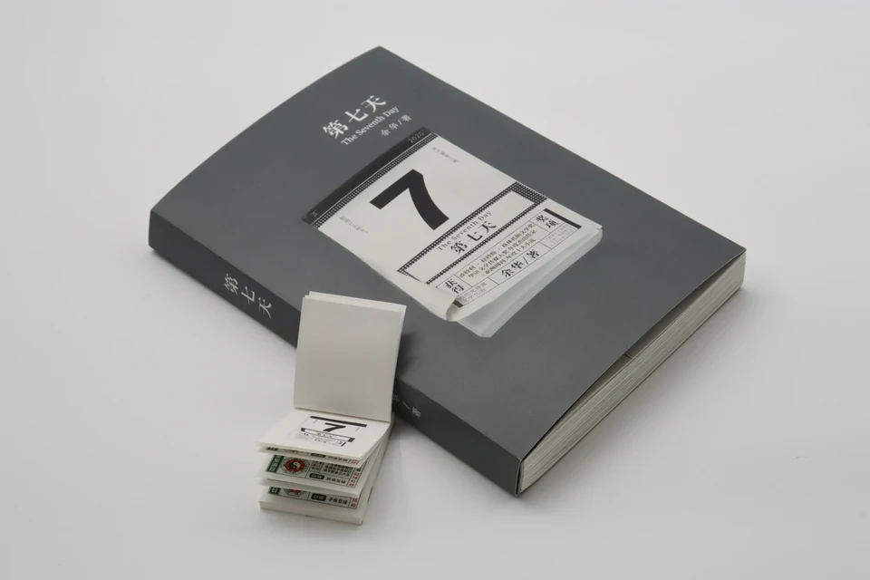
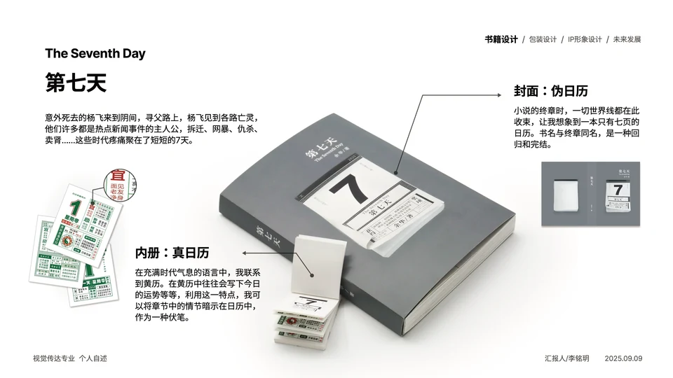
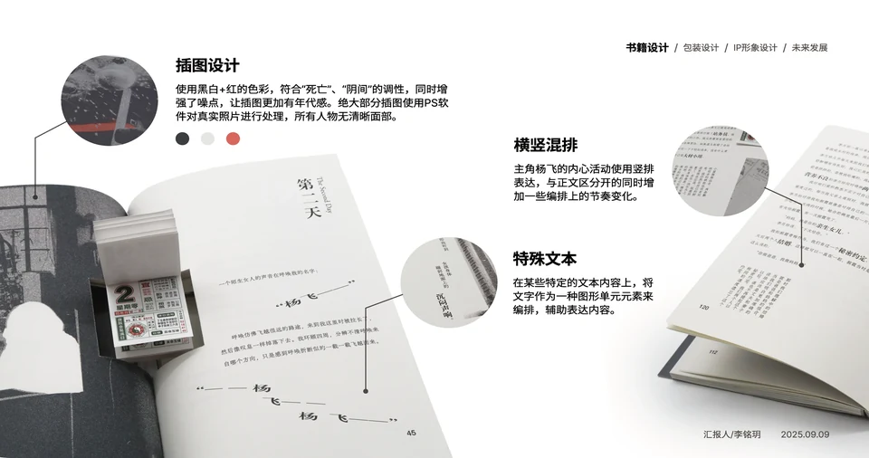
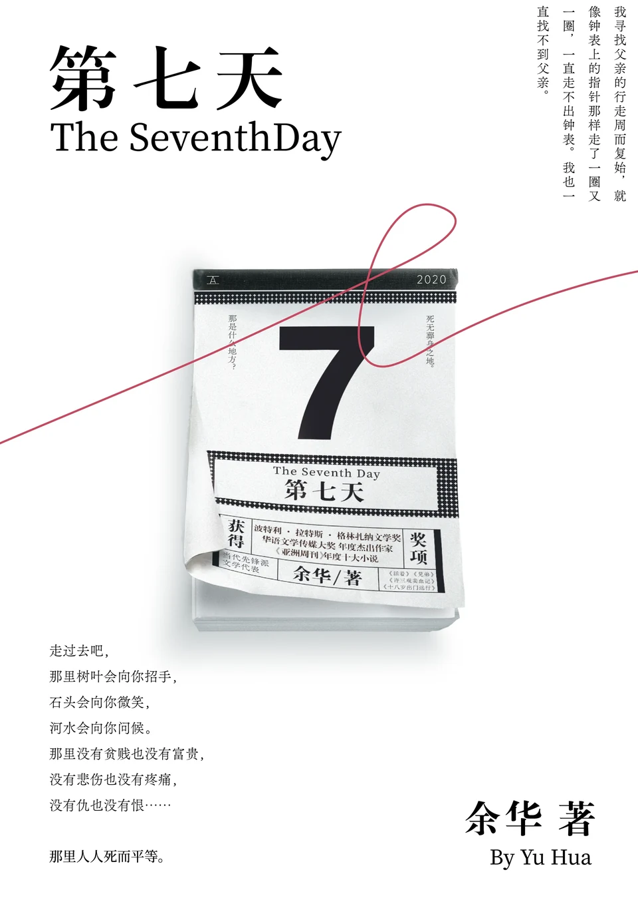

BOOK & EDITORIAL / 2025.05
《第七天》
书籍设计 · 编排 · 装帧原著：余华《第七天》
开本：148 × 210 mm
页数：280 页
装帧方式：锁线
指导老师：王红卫

以余华小说《第七天》为主题进行书籍编排与装帧设计。故事围绕杨飞死后七天的经历展开，他在寻找父亲的途中遇见不同的亡灵。设计以嵌入书中的异形小日历回应“七天”，将时间线索融入翻阅过程。
将七天装进一本书
小说的终章让各条叙事线索在此收束，也让我联想到一本只有七页的日历。封面以日历形式呈现书名，呼应同名终章，表达回归与完结。内册采用真正的黄历形式，利用黄历中“宜”“忌”等提示，将各章节的情节暗示在日历中，作为阅读的伏笔。



↔︎ 左右拖动浏览 · 点击查看大图
插图的色彩与质地
插图以黑白与红色为主要色彩，回应小说中死亡与阴间的氛围；通过增强噪点，营造具有年代感的图像质地。绝大部分插图使用 Photoshop 对真实照片进行处理，人物均不呈现清晰面部。
横竖之间的阅读节奏
主角杨飞的内心活动使用竖排，与横排正文区分，同时带来编排节奏的变化。在部分特定文本中，将文字作为图形元素进行编排，以字形、位置与疏密辅助表达内容。

